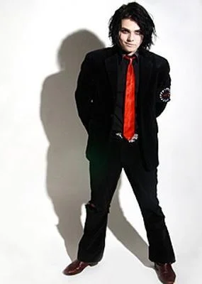
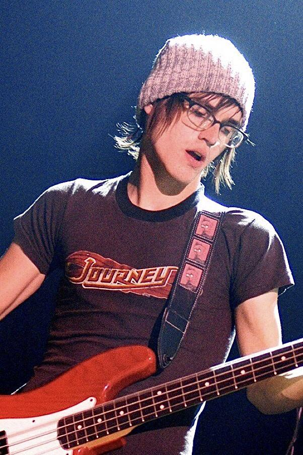
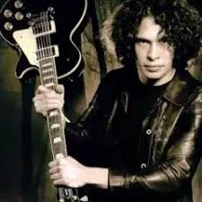
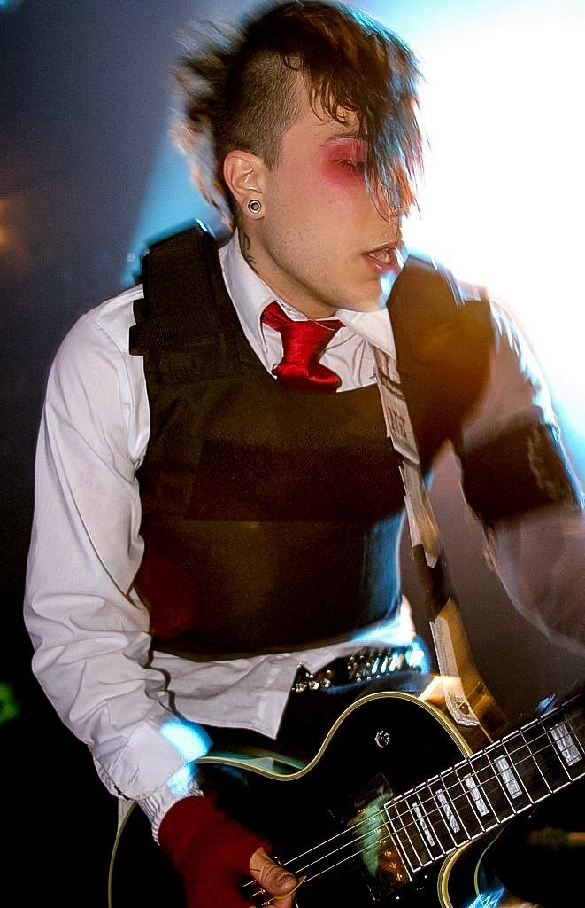
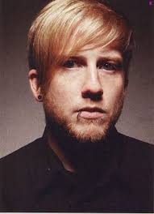

Integrantes
Gerard Way

Gerard Arthur Way nasceu em 9 de abril de 1977, em Summit, Nova Jersey (EUA). Desde pequeno, ele já se interessava por arte e música. Cresceu ouvindo bandas como The Misfits, Queen, The Smiths e David Bowie, influências que mais tarde moldariam seu estilo único — meio teatral, sombrio e emocional. Durante a adolescência, Gerard mergulhou no mundo dos quadrinhos e do desenho. Ele estudou Ilustração na School of Visual Arts em Nova York e chegou a trabalhar brevemente na DC Comics antes de formar uma banda.
Após o fim da banda em 2013, Gerard lançou um álbum solo, Hesitant Alien (2014), com um som mais indie e influências de Britpop.
Além da música, ele voltou aos quadrinhos — criou a premiada série The Umbrella Academy, que virou série da Netflix em 2019.
Gerard Way sempre foi mais do que um cantor — ele é artista, roteirista, ícone visual e símbolo de uma geração que encontrou força em suas letras.
Mesmo depois de tantos anos, ele continua inspirando fãs com mensagens sobre autenticidade, arte e aceitação.
Mikey Way

Michael James Way, mais conhecido como Mikey Way, nasceu em 10 de setembro de 1980, em Newark, Nova Jersey. Ele é o irmão mais novo de Gerard Way, e cresceu junto com ele ouvindo bandas como The Misfits, Iron Maiden e Smashing Pumpkins — músicas que moldaram o que viria a ser o som do My Chemical Romance.
Quando a banda acabou em 2013, Mikey passou por um período complicado, mas deu a volta por cima:
tocou em projetos como Electric Century
explorou novas sonoridades
casou, teve dois filhos
continuou trabalhando com música de forma mais tranquila
Ray Toro

Raymond Toro-Ortiz, mais conhecido como Ray Toro, nasceu em 15 de julho de 1977, em Kearny, Nova Jersey.
Desde pequeno, Ray era aquele garoto quieto, estudioso e completamente apaixonado por música — especialmente por guitarras.
Cresceu ouvindo Queen, Metallica, Hendrix e Smashing Pumpkins, que influenciaram muito o estilo dele.
Após o hiato do MCR em 2013, Ray:
lançou músicas solo
trabalhou como produtor e engenheiro de áudio
continuou criando em silêncio, do jeito dele
se dedicou à família
Frank Iero

Frank Anthony Iero Jr., nascido em 31 de outubro de 1981 em Belleville, Nova Jersey, é o guitarrista rítmico do My Chemical Romance.
Ele cresceu com uma mistura de influências punk, hardcore e rock alternativo, ouvindo bandas como The Misfits, Black Flag e The Smiths.
Desde muito novo, Frank já estava envolvido com música.
Ele tocava em várias bandinhas locais e fazia parte da cena punk de Jersey — o que moldou seu estilo agressivo, intenso e emocionalmente carregado.
Frank é super prolífico:
depois do término da banda em 2013, ele lançou diversos projetos:
frnkiero andthe cellabration
Frank Iero and the Patience
Frank Iero and the Future Violents
Death Spells (um projeto eletrônico pesado)
Bob Bryar

Bob Bryar nasceu em Chicago, Illinois (EUA).Ele era baterista, engenheiro de som e músico profissional. Aprendeu a tocar bateria desde cedo e estudou som/engenharia antes de entrar no MCR.
Bob Bryar foi o baterista do My Chemical Romance de 2004 até 2010 e marcou profundamente a fase mais famosa da banda. Ele entrou logo depois do primeiro álbum e participou das eras Three Cheers for Sweet Revenge e The Black Parade, que são consideradas o auge da estética e do som do MCR.
Mesmo não sendo membro fundador, Bob rapidamente virou um dos pilares da banda. Ele tinha um estilo de bateria pesado, seco e preciso, que combinava perfeitamente com o clima teatral e emocional do MCR. Foi com ele que a banda gravou músicas lendárias como Helena, I’m Not Okay, Famous Last Words e praticamente todo o álbum The Black Parade.
Bob também ficou conhecido pela personalidade reservada, mas sempre muito comprometida com o trabalho. Ele participou de todas as grandes turnês da época e estava presente nos videoclipes e nos bastidores desse período icônico.
Em 2010, ele se desligou da banda. Até hoje, os motivos nunca foram completamente explicados — o que acabou gerando vários rumores ao longo dos anos. Desde então, Bob se afastou completamente dos holofotes e mantém uma vida privada, sem envolvimento com a indústria musical.
Mesmo assim, para muitos fãs, ele continua sendo o baterista mais marcante que o My Chemical Romance já teve. Seu trabalho nos dois álbuns mais importantes da banda garantiu para sempre o lugar dele na história do rock alternativo.
Pagina inicial
Albuns